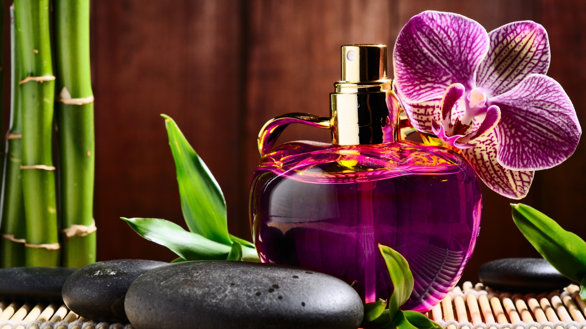
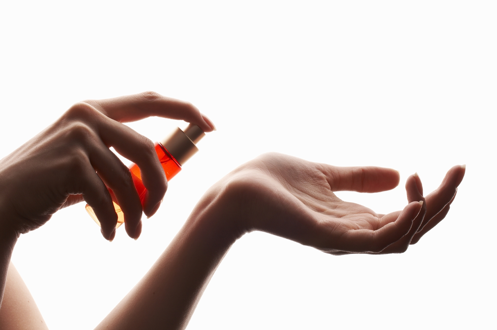

Întâi de toate trebuie să vă struniţi un alt simţ, văzul! Nu vă lăsaţi înşelaţi de frumuseţea ambalajului şi coloritul splendid al flaconului. Vă cumpăraţi parfumul pentru mirosul său! Cel mai cunoscut parfum, celebrul No.5 de la Chanel, se vinde în acelaşi flacon pătrat şi în ambalajul simplu, fără zorzoane, din 1921, fără a-i fi pierit aura de rege al parfumurilor.
Pentru a lua contactul cu parfumul, folosiţi cartonaşele ce se află lângă flaconul-tester ori - cel mai bine - aplicaţi-l, în cantitate mică, direct pe piele. Unde pe piele? Acolo unde pulsează sângele mai viguros, la încheietura mâinii. Nu vă repeziţi să-i inspiraţi savoarea imediat, ci aveţi răbdare 10-15 secunde, timp în care dispare izul de alcool care vă poate înşela în privinţa adevăratului miros al parfumului.
Contanctul cu pielea arata adevarata compatibilitate cu parfumulContactul cu pielea va arăta adevărata faţă a parfumului, lămurindu-vă asupra compatibilităţii dintre d-voastră şi parfum. Dacă vreţi să fiţi riguroşi în alegerea parfumului, alegeţi să-l cunoaşteţi aşa cum va fi după ce-l veţi cumpăra, aşa că testaţi-l în condiţii reale! Nu vă frecaţi încheieturile mâinilor, aşa cum vedeţi adesea că fac prin parfumerii domnişoare cochete, pentru că alteraţi bogăţia de arome a parfumului.
 Nu încercaţi mai mult de 3 parfumuri unul după altul!Nasul nostru nu poate suporta mai mult, fără a ne juca feste în privinţa adevăratului miros. Dacă sunteţi hotărâţi să încercaţi mai multe parfumuri într-un magazin dedicat, după ce testaţi 2-3, luaţi-vă un răstimp pentru revenirea simţului olfactiv, în care puteţi discuta cu vreuna dintre angajatele magazinului despre ce parfumuri au mai apărut.